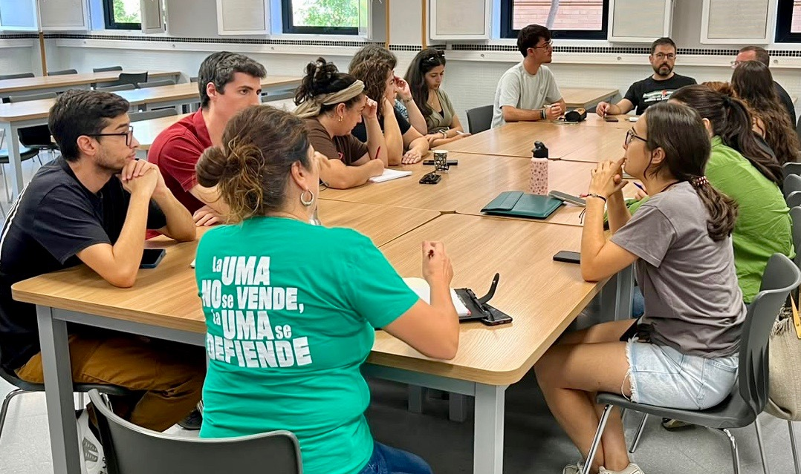

Resumen de nuestras actividades
Con este boletín queremos mantener una comunicación mensual que resuma las actividades y las iniciativas de SiAM. Si quieres más información sobre alguno de estos temas o deseas compartir tus inquietudes y proponer acciones, ¡¡¡te esperamos!!!
Nuestro próximo Grupo de Apoyo Mutuo "Café con SiAM" será el viernes, 30 de octubre, a las 11:30 de la mañana en el aula E4 (Espacio Educativo Exterior) de la Facultad de Ciencias de la Educación (delante del edificio, hacía el lado del Contenedor Cultural). Un espacio mensual donde podrás compartir tus inquietudes y preguntas, proponer acciones y disfrutar del apoyo mutuo con nosotras. Tráete el café que nosotras ponemos el bizcocho.
Denunciamos las irregularidades en la negociación del Plan de Actuaciones Inspectoras con los representantes sindicales, así como la falta de diálogo con las secciones sindicales en la UMA.
El pasado 23 de octubre tuvo lugar una nueva Mesa Negociación del PDI en la UMA. Se trataron temas relacionados con el profesorado asociado como la actualización del baremo para la contratación de Profesorado Asociado al Concierto de Instituciones Sanitarias, de acuerdo con el compromiso de la UMA con DORA y CoARA en los concursos.
Otra de las cuestiones fue la presentación de una nueva actualización de la reglamentación sobre la reserva de cupo de discapacidad en el plan de estabilización del profesorado asociado.
Entre los puntos del orden del día, se encontraba la presentación de propuestas sobre el próximo POD, que SiAM rechazó frontalmente por mermar la calidad docente del PDI.
Por último, SiAM volvió a preguntar por los RADs por discapacidad, la solución a los problemas de climatización en los centros, las soluciones a la vivienda ante la construcción del estadio de fútbol en el Campus de la Ampliación de la UMA (todas estas cuestiones sin responder de la mesa del mes de septiembre) así como por la necesidad de cerrar el reglamento PSU que, a pesar de su negociación, sigue sin ser aprobado. Igualmente, informamos de posible visita del agitador ultra Vito Quiles a Málaga; hicimos una petición de rechazo y cobertura nula cobertura a este tipo de actividades en nuestra universidad.
UMAxlaPública comenzó el mes con una asamblea, en la que participamos, preparando la reunión con el rector el 8 de octubre y la participación en las actividades de la Asamblea Andaluza por la Educación Pública. El pasado miércoles 21 nos volvimos a reunir para preparar la huelga educativa del 11-N y organizarnos con otros colectivos en torno al tema de la posible ubicación del futuro estadio del Málaga en terrenos de nuestro Campus. Toda la información sobre las actividades de UMAxlaPública aquí (https://uma.porlapublica.org/11N/), busca tu centro y súmate a la actividades.

Participamos en la asamblea online del 8 de octubre, donde se preparó la concentración-asamblea en la Plaza de la Constitución del 14 de octubre, coincidiendo con el inicio de la huelga educativa en Madrid. Estuvimos en dicha concentración y estaremos en la próxima asamblea del día 28 en el IES Romero Esteo para preparar la huelga del 11-N. Más información sobre las actividades de la Asamblea aquí (poner enlace).
¡HUELGA GENERAL POR LA VIVIENDA Y LA EDUCACIÓN PÚBLICA!
11 de noviembre